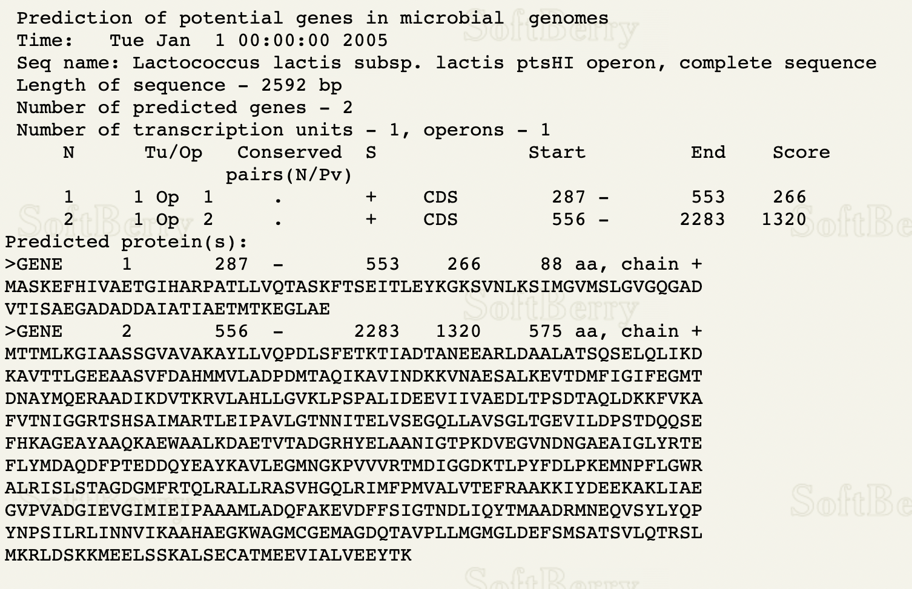
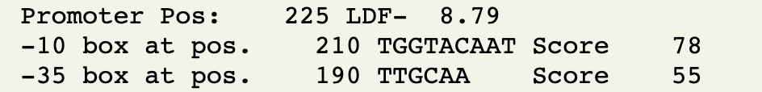

Genome Analysis
Gene Prediction and Annotation
Prokaryotic Gene Prediction and Annotation
Early annotations determined coding regions of prokaryotic genomic DNA based on the longest open reading frame (ORF), as there are usually no introns. However, multiple potential start codons pose a difficulty to the process. Gene prediction tools identify the most likely CDS region, but as they are designed to predict DNA coding DNA sequences, RNA sequences are difficult to predict. RNA-seq provides information on gene expression, and transcription start/stop sites. Transcript data is used to complement gene prediction tools and provide a complete annotation of mRNA, ncRNA, and CDS locations.
ORF Finder
Searches for open reading frames (ORFs) and returns a range of ORF locations (strand, frame, start, stop) and translated protein. ORF Finder Documentation
The three longest ORFs of a Bacillus subtilis genomic sequence were identified using ORF Finder. The picture below from the Open Reading Frame Viwer demonstrates ORF1 (reading frame 1), ORF2 (reading frame 1), and ORF7 (reading frame 3).

Glimmer
Glimmer is a Unix-based program used to locate bacterial genes. The program locates long ORFs to identify CDS locations and returns information on the strand and reading frame. Glimmer Documentation
Glimmer was used to analyze part of a contig from a strain of Halanaerobium (halan.fasta). The genome is incomplete and was submitted by a group at the University of Pittsburgh on September 6, 2016. Some CDS regions have been annotated by NCBI Prokaryotic Pipeline Analysis. No mRNAs have been annotated. The complete genome of Halanaerobium praevalens, a related species isolated from the Great Salt Lake sediment in Utah, was used as a training set.

Commands used:
long-orfs -n -t 1.15 hprev_genome.fasta hprev.longorfs
extract -t hprev_genome.fasta hprev.longorfs > hprev.train
build-icm -r hprev.icm < hprev.train
glimmer3 -o50 -g110 -t30 halan.fasta hprev.icm halan
extract -t halan.fasta halan.predict > halan.glimmer

Below is the DNA sequence of ORF1 in FASTA format, according to the halan.glimmer file.

Based on the Glimmer results, the predicted CDS locations of the halan.fasta file is as follows:
CDS 1: 171 - 350, CDS 2: 343 - 1626, CDS 3: 1629 - 4733, CDS 4: 5786 - 4971
FGENESB
FGENESB is the annotation of bacterial genomes based on the Markov chain model. The program identifies CDS locations, promoters, operons, translation sites, and termination sites. The output contains the strand, reading frame, and information on which mRNA includes those particular coding genes. FGENESB Documentation
Using the same sequence as the Glimmer example above, FGENESB was run, and the results between the two gene-prediction tools were compared.
FGENESB Output:
Training set: bacterial generic
Based on the FGENESB prediction, there are two mRNA molecules. The first mRNA is located on the + strand and consists of 3 CDSs. The second mRNA is located on the - strand and consists of 1 CDS.
Both FGENESB and Glimmer predicted 4 CDSs, 3 on the + strand and 1 on the - strand. The locations differ only on the start position of the first CDS, where Glimmer predicted it to be located between positions 171 and 350, and FGENESB predicted it to be located between positions 3 and 350. All other predicted locations are the same between the two prediction tools.
BPROM
BPROM Identifies potential σ70 promoters with Linear Discrimination Function with 80% accuracy.
Using the DNA sequence from Lactococcus lactis, FGENESB was used to find the location of two genes on an operon, then BPROM was used to find the locations of the -35 and -10 signals.
FGENESB predicted the CDS locations of the first gene are between positions 287 and 553, and the CDS locations of the second gene are between positions 556 and 2283. According to BPROM, the most appropriate -10 signal is at position 210, and the -35 signal is at position 190.
 Eukaryotic Gene Prediction
Expression-based gene prediction tools align cDNA and protein sequences to precisely located coding regions. Single genome de novo gene prediction tools are able to locate genes where expression-based methods were unable to, analyzing gDNA to predict exon locations.
Splign
Splign aligns cDNA to gDNA to identify splice-junctions, frameshifts, and alternative gene models. Splign supports alignments from different species and produces an output containing a complete gene model. Splign